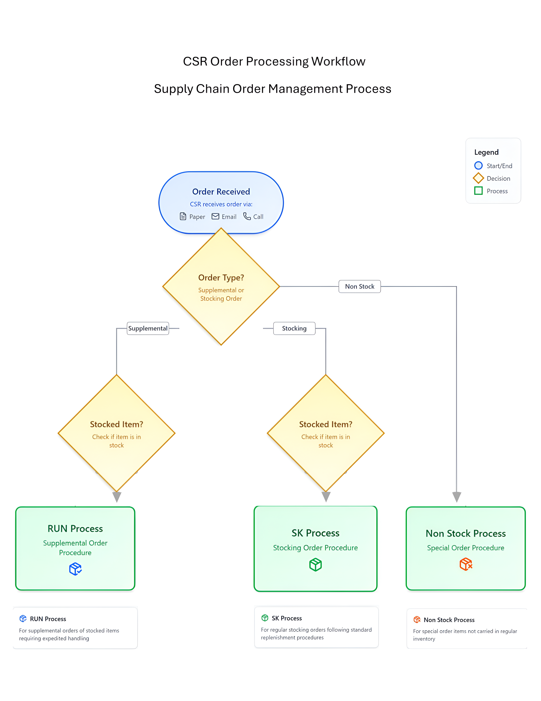

USER: Autumn P.
STAKEHOLDER: The University's Hospital Supply Chain Department.
CASE: Autumn P., a new employee at the hospital’s supply chain, is a trainee who experienced frustrations and a desatisfection by having several pain points in her training for a CSR position at the hospital's supply chain unit.
Click here the process Autumn P. went through in her training period!

This is the flow of user experience in research project: workflow at the supply chain costumer services.